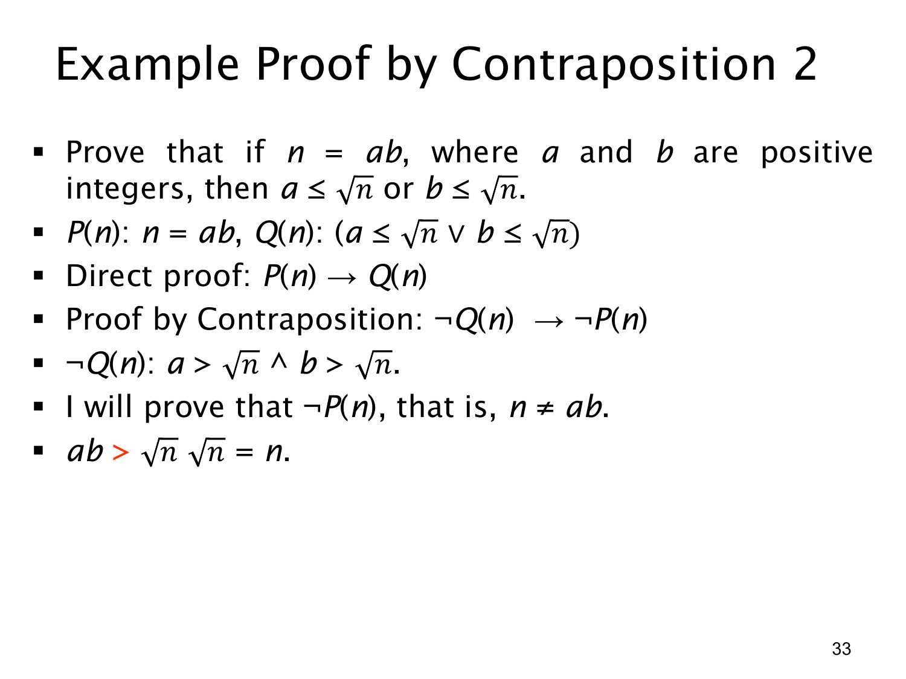

L1.3 · 第 33 页讲解原文
查看这一页课件

逆否证明实例：两个因子至少一个不超过平方根
命题是：若正整数 a,b 满足 n=ab，则 a≤n 或 b≤n。这里 n=ab>0，所以 n 有定义。它表达了一个常用事实：两个因子不可能同时都大于乘积的平方根。
设前件 P 为 n=ab，后件 Q 为 (a≤n)∨(b≤n)。证明逆否命题 ¬Q→¬P。根据德摩根律，
¬Q=¬((a≤n)∨(b≤n))=(a>n)∧(b>n).
假设这两个严格不等式同时成立。由于 a,b,n 都是正数，可以将不等式相乘，得到
ab>nn=n.
因此 ab=n，也就是 ¬P。逆否命题得证，原命题随之成立。
这里的“或”是含或：允许两个因子都不超过 n，例如 a=b=n 时两边都成立。若 n 不是完全平方数，整数因子的实际边界可进一步关联到 ⌊n⌋，但本页只需证明给出的平方根表述。课件用 P(n),Q(n) 作简写；严谨地说，它们的真假也依赖已固定的 a,b，证明是在给定正整数 a,b 与相应 n 的范围内进行。